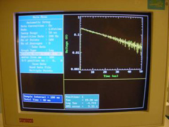
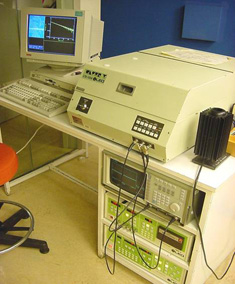

In the context of this test “lifetime“ refers to the minority carrier lifetimes in the substrate of the wafer. This refers to the average length of time that an electron-hole pair will survive prior to recombining (or more precisely, the time necessary for the generated minority carrier concentration to decay to 1/e of its original value). The value of this parameter is therefore affected by all the recombination mechanisms within the active region of the wafer. This of course includes the surfaces which can therefore make it difficult to measure the lifetime of the minority carriers in the substrate material if in fact the surface recombination velocity is high. For this reason, lifetime tests need to be conducted with wafers that have their surfaces well passivated. For the purpose of the test, this is often achieved chemically using either a special iodine based solution or else hydrofluouric (HF) acid to provide temporary but effective surface passivation. For the latter, extreme caution needs to be exercised as HF is an extremely dangerous acid and should never be used without thorough training and permission from supervisors.
A range of systems have been developed that facilitate the measurement of this parameter. Some involve pulsing the wafer with a bright sharp pulse of light and then probing the wafer to observe its open circuit voltage decay. The open circuit voltage is a direct measure of the carrier concentration therefore facilitating the use of the open circuit voltage decay as a measure of the carrier concentration decay which, in turn, is a direct function of the carrier lifetimes. This approach, however, necessitates the existence of a junction and also probing of the wafer surface.
Probably the preferred approach these days is based upon photoconductivity decay. Another measure of the carrier concentrations in the wafer is via its conductivity which can be determined without contacting the wafer via an electric coil mounted juxtaposed to the wafer. The carriers can be excited by either a light source or a laser and then the subsequent carrier concentration decay determined. From this decay curve, the effective carrier lifetime can be determined. An example of such a curve is shown below.

Figure: Voltage decay curve as excited carriers in the silicon
substrate recombine following excitation by a laser
pulse.
This test can be useful for incoming wafers so as to ascertain their quality. The parameter will vary not only as a function of wafer quality but also as a function of the doping concentration within the wafer. For example, a more heavily doped wafer will tend to have shorter minority carrier lifetimes simply because of the higher concentration of majority carriers that are available for participation in the recombination process. Significant differences in minority carrier lifetime are also anticipated with varying crystallographic quality such that multicrystalline silicon wafers would, in general, be expected to have poorer lifetimes than single crystal silicon wafers. Furthermore, the multicrystalline wafers are likely to have quite variable minority carrier lifetimes between crystals although this particular test may not pick up this variation since it is normally performed over a relatively large area of the wafer and therefore tends to provide a result that represents the average over the illuminated area. An example of a typical system for making the lifetime measurements is shown below.

Figure: Equipment used for measuring the minority carrier
lifetimes of a silicon substrate.
Lifetime tests can be useful at any part of the process, particularly after high temperature steps where there is opportunity for contamination to damage the wafer. In addition, some processes may even have the potential to increase the minority carrier lifetime through gettering processes. Probably the best example of this is through the firing of the aluminium layer across the rear of the wafer.
The minority carrier lifetime will directly impact both the open circuit voltage and the short circuit current of the solar cell. For the former, the lifetime directly impacts the calculation of the device dark saturation current, which in turn, determines the open circuit voltage as described in the textbook. The short circuit current is affected since the distance the minority carriers are able to travel to be collected by the junction (the diffusion length) is directly proportional to the carrier minority carrier lifetime. For example, a wafer with a minority carrier lifetime of 20 microseconds will typically have a diffusion length a little over 200 microns. As a rough guide, this indicates that carriers generated more than 200 microns from the junction will have low probability of contributing to the current generation of the device. This means that any device that has a thickness greater than the minority carrier diffusion length will tend to have a poor response to longer wavelengths of light that penetrate deeply within the silicon and generate carriers in the vicinity of the rear surface.